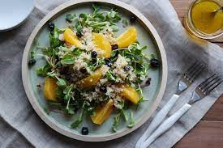

레드향 샐러드 레시피

재료 :
레드향 1개, 아보카도 1개, 토마토 1개, 샐러드 채소 30g
드레싱 :
올리브유 1큰술, 레몬즙 2큰술, 꿀 1큰술, 소금 약간
샐러드 채소를 씻고 물기를 제거한 후 준비합니다.
레드향과 아보카도, 토마토를 먹기 좋은 크기를 썰어둡니다.
드레싱 재료를 믹서에 갈아줍니다.
볼에 샐러드 채소와 썰어 둔 레드향, 아보카도, 토마토를 넣고 드레싱 뿌리면 끝!